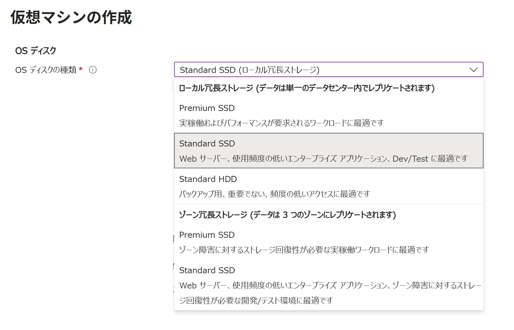
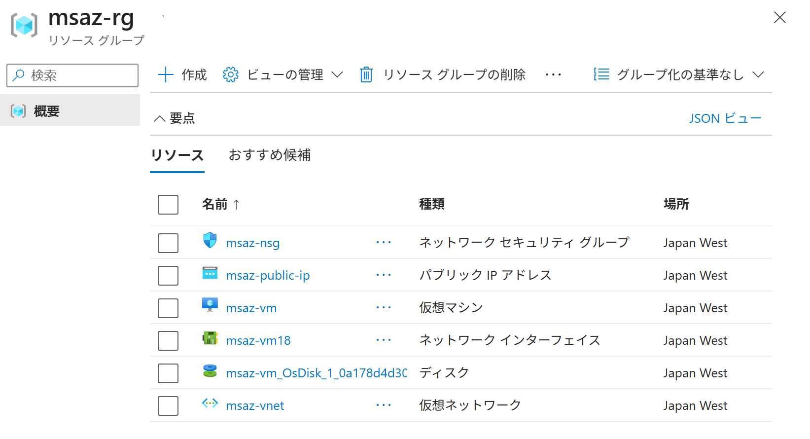
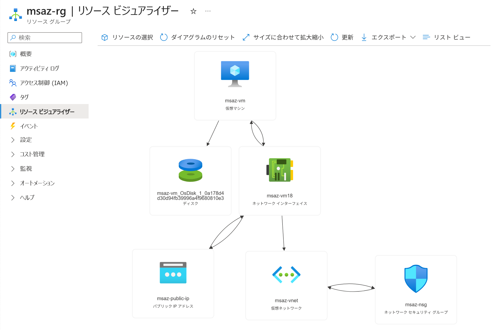

Azure ポータルで 仮想マシンを作成する（＋NIC ＋Disk）
適用対象: ✔️ 仮想マシン
この演習では、Azure ポータルを使用して Windows仮想マシン・ネットワーク インターフェイス・ディスクを作成します。
所要時間: 約 15 分
先行の演習
この演習を始める前に ネットワークセキュリティグループを作成する パブリック IP アドレスを作成する を完了してください。
仮想マシン
仮想マシンは、物理マシン上にソフトウェアで作られるコンピューターです。
物理マシンの CPU やメモリなどを割り振って動作し、実物のコンピューターのように利用できます。
物理マシンの資源を共有して動作するため、1台の物理マシン上に複数の仮想マシンを作成できます。

タスク 1: 仮想マシンの作成
仮想マシン（Virtual Machine）を作成します。
仮想マシンを作成する際、関連するリソースも同時に作成する必要があります。
- ポータルメニューから [仮想マシン] を選択します。
- [＋ 作成] を選択します。
- [仮想マシン] を選択します。
- 使用する サブスクリプション を選択します。
- リソース グループで [msaz-rg] を選択します。
- 以下の設定値を入力または確認します。指定のない項目はデフォルトのままにします。

設定 値 仮想マシン名 msaz-vmリージョン [(Asia Pacific) Japan West] 可用性オプション [インフラストラクチャ冗長は必要ありません] セキュリティの種類 [トラステッド起動の仮想マシン] イメージ [[smalldisk] Windows Server 2022 Datacenter: Azure Edition - x64 Gen 2] サイズ [Standard_D2als_v6 ...] など 認証の種類 [パスワード] ユーザー名 azureuserパスワード Password123!などパブリック受信ポート [なし] - [次： ディスク ＞] を選択します。
- ディスク タブで、設定項目を一通り確認します。指定のない項目はデフォルトのままにします。
- [次： ネットワーク ＞] を選択します。
- ネットワーク タブで、以下の設定値を入力または確認します。指定のない項目はデフォルトのままにします。
ネットワーク インターフェイスが 仮想マシンと同時に作成されます。
ネットワーク インターフェイス用のネットワーク セキュリティ グループが 仮想マシンと同時に作成されます。設定 値 仮想ネットワーク [msaz-vnet] サブネット [subnet (10.0.1.0/24)] パブリック IP [msaz-public-ip] NIC ネットワーク セキュリティ グループ [なし]
ℹ️ 選択されたサブネット 'subnet (10.0.1.0/24)' は、既にネットワーク セキュリティ グループ 'msaz-nsg' に関連付けられています。この仮想マシンへの接続の管理は、ここで新規のネットワーク セキュリティ グループを作成するのではなく、既存のネットワーク セキュリティ グループ経由で行うことをお勧めします。VM が削除されたときにパブリック IP と NIC を削除する [☑️] VM が削除されたときにパブリック IP を削除する [☑️] 負荷分散のオプション [なし] - [次： 管理 ＞] を選択します。
- 管理 タブで、設定項目を一通り確認します。設定値はデフォルトのままにします。
- [次： 監視 ＞] を選択します。
- 監視 タブで、設定項目を一通り確認します。指定のない項目はデフォルトのままにします。
- [次： 詳細 ＞] を選択します。
- 詳細 タブで、設定項目を一通り確認します。設定値はデフォルトのままにします。
- [次： タグ ＞] を選択します。
- タグ タブで、設定項目を一通り確認します。設定値はデフォルトのままにします。
- [確認および作成] を選択します。
- 確認および作成 タブで、仮想マシンだけでなく、ディスクやネットワークも作成の対象になっていることを確認します。
- [作成] を選択します。
- 完了を待ちます。

| 設定 | 値 |
|---|---|
| OS ディスクの種類 | [Standard SSD (ローカル冗長ストレージ)] |
| VM と共に削除 | [☑️] |

| 冗長性の種類 | ディスクの種類 | 説明 |
|---|---|---|
|
LRS ローカル冗長ストレージ (データは単一のデータセンター内でレプリケートされます) |
Premium SSD | 実稼働およびパフォーマンスが要求されるワークロードに最適です |
| Standard SSD | Web サーバー、使用頻度の低いエンタープライズ アプリケーション、Dev/Test に最適です | |
| Standard HDD | バックアップ用、重要でない、頻度の低いアクセスに最適です。2028年9月8日廃止予定 | |
|
ZRS ゾーン冗長ストレージ (データは 3 つのゾーンにレプリケートされます) |
Premium SSD | ゾーン障害に対するストレージ回復性が必要な実稼働ワークロードに最適です |
| Standard SSD | Web サーバー、使用頻度の低いエンタープライズ アプリケーション、ゾーン障害に対するストレージ回復性が必要な開発/テスト環境に最適です |
| 設定 | 値 |
|---|---|
| ブート診断 | [無効化] |
タスク 2: 作成されたリソースの確認
仮想マシンだけでなく、仮想マシンに関連するリソースも同時に作成されていることを確認します。
- ポータルメニューから [リソース グループ] を選択します。
msaz-rgを選択します。- リソースの一覧が表示されます。仮想マシンに関連する複数のリソースが 同じリソース グループ内に作成されたことを確認します。

名前 リソースの種類 msaz-nsgネットワーク セキュリティ グループ msaz-public-ipパブリック IP アドレス msaz-vm仮想マシン msaz-vm18ネットワーク インターフェイス msaz-vm_OsDisk_1_.....ディスク msaz-vnet仮想ネットワーク
タスク 3: リソースの関連付けの確認
作成されたリソースがどのように関連付けされているかを確認します。
- ポータルメニューから [リソース グループ] を選択します。
msaz-rgを選択します。- サービスメニューから [リソース ビジュアライザー] を選択します。
- 仮想マシンに関連する複数のリソースがどのように関連付けされているか確認します

- ネットワークセキュリティグループの関連付けは ネットワーク設計に応じていくつかのパターンに分類できます。ここでは、デフォルトのネットワークセキュリティグループがネットワークインターフェイスに関連付けされています。